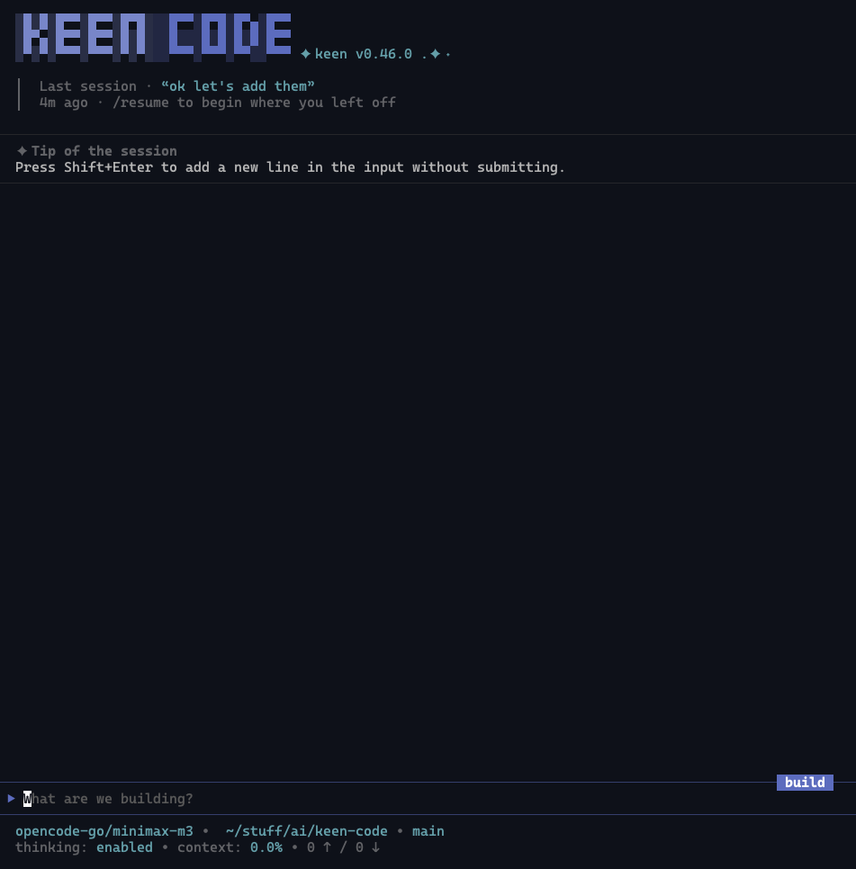
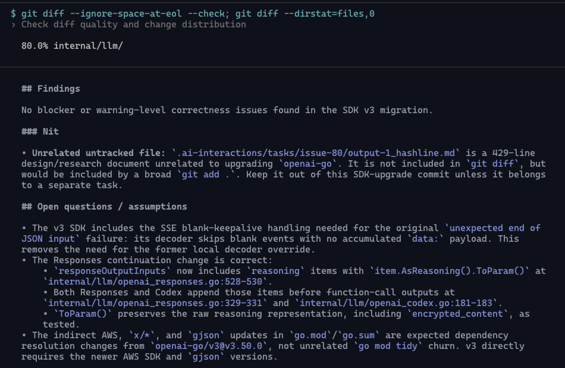
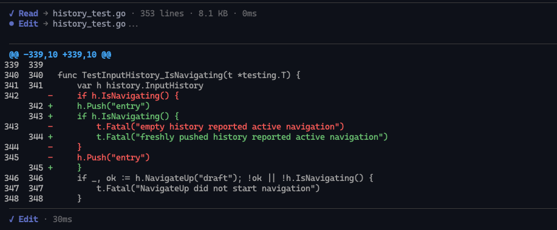
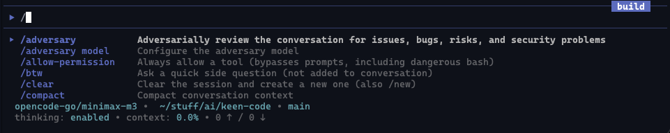
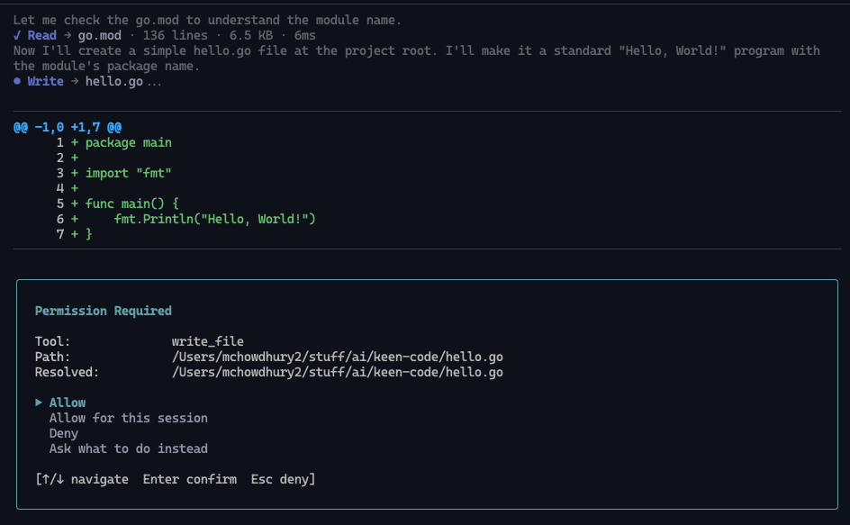

About


Keen Code is a terminal-based AI coding agent like Claude Code or Codex CLI. Written in Go, it is simpler, lighter, minimalistic but useful coding agent for typical software engineering tasks. It supports multiple providers, skills, MCPs, subagents with multi-agent orchestration, and more.
Keen Code is highly opinionated. It avoids features that are not necessarily needed or useful for a regular software engineer. It tries to avoid unnecessary complexity and attempts to keep the agent harness as simple as possible.
From requirements to implementation, Keen Code was engineered using a wide range of coding agents and agentic IDEs. By far, AI coding agents are the most ubiquitous use case in the era of AI agents. One of the goals of the project is to showcase how coding agents can be used to develop coding agents themselves. This is why most prompts and output docs are saved as markdown files in the .ai-interactions directory.
Keen Code is also an experiment to play with the new way of working where engineers work with AI agents to develop software. In this setting, engineers are sometimes referred to as "orchestrators".
Born as an experiment, Keen is now a fully functional coding agent designed for real-world software development.
Table of Contents¶
- Features
- Screenshots
- Development Philosophy
- Development Cycle Example
- Install Keen Code
- Install with script
- Install with npm
- Run Keen
- Supported Providers
- Built-in Tools
- Telemetry
- How Keen Handles Context
- Further Reading
Features¶
- Multi-provider — Anthropic, OpenAI, Codex (via OAuth), Gemini, DeepSeek, Kimi, GLM, MiniMax, OpenCode Go, and Amazon Bedrock. Switch with
/model. More providers will be added in the future. - 6 minimal tools —
read_file,write_file,edit_file,glob,grep,bash. Deliberately lean. - Skills system — Specialized workflows for planning, debugging, refactoring, code review, and more.
- Thinking mode — Extended reasoning for complex tasks. Use
/thinkingto change the thinking effort level for the current model. All models that support thinking can be configured. - Session management — Persistent sessions with resume capability.
- Configurable tool history — Lean cross-turn
TurnMemorysummaries by default; use/tool-history fullto retain full tool outputs for future turns. More information can be found in docs/turn-memory.md. - User-triggered compaction - When the context window is nearing the limit, use
/compactto compact the context.
Screenshots¶
|
 Full interface |
 Command output |
|
 Diff review |
 Interactive commands |
|
 Permission prompt |
|
{kind=link}
{kind=link}
{kind=link}
{kind=link}
{kind=link}
Telemetry¶
Keen Code collects two minimal anonymous usage events for actual interactive and headless coding sessions: keen_session_start and keen_session_end. Help, version, and invalid command invocations are not counted. The events contain a random resettable installation ID, a session ID, Keen version, OS, architecture, interactive/headless mode, and session duration in milliseconds. Google Analytics derives coarse country from the request connection, so no separate country event or country value is sent.
Keen Code never sends prompts, responses, code, paths, commands, repository details, model/provider details, or raw errors. Set KEEN_TELEMETRY=off or DO_NOT_TRACK=1 to disable telemetry. It is also disabled automatically in CI.
Telemetry delivery is fail-silent. The session-start event is emitted asynchronously, and the session-end event is emitted on normal exit. Each event has a one-second timeout. Forced termination, crashes, and network failures can still prevent delivery.
How Keen Handles Context¶
Keen takes a deliberately lean approach to cross-turn context. Within a single assistant turn the model has full access to its tool calls and results. By default, later model requests receive a bounded TurnMemory summary attached to assistant messages: where retained tools ran, their bounded invocation inputs, status, and non-zero bash exit codes—not their raw outputs.
For ideation or work that benefits from revisiting exact earlier results, run /tool-history full. Tool outputs from future turns are then retained in the current session's cross-turn model context. Run /tool-history none to return to the compact default, or /tool-history to inspect the setting. Full history increases prompt size and token cost; it is not persisted when a session is saved.
Subsequent turns therefore receive:
- prior user and assistant messages
- provider-native historical tool-call/result blocks reconstructed from assistant prose and
TurnMemory - any pending provider-native state from a turn that failed mid-loop, so the model can resume instead of starting over
The default tradeoff is intentional: smaller context and a better signal-to-noise ratio, at the cost of occasionally re-reading files or re-running searches when older observations are needed again. Read-only facts and external observations are refreshed when needed rather than treated as durable evidence. /tool-history full lets you choose continuity over that default for the remainder of the session.
For the full rationale, lifecycle, and comparison with other coding agents, see docs/turn-memory.md.
Development Philosophy¶
Developing Keen Code is guided by the following philosophy:
- All the code is written by AI agents, not humans
- The project is developed iteratively using spec-task-code-review cycle by a human engineer
- The human engineer has a very strict set of roles:
- Specifiy and clarify the requirements
- Review design docs and influence design decisions
- Review changes made by the agents
- Changes can also be reviewed by the agents themselves
- Ensure the quality and correctness of the code
- Focus on best practices and standards relevant to the programing language (Go in this case)
- Thoroughly review and test the product after each iteration
- Continously provide feedback to the agents to improve the product
- Prompts are saved as markdown files in the
ai-interactions/promptsdirectory - Almost all of the prompts are stored to showcase how the project evolved from the initial requirements to the current state
- Prompts are pretty much chronologically ordered which demonstrates the thought process and iterative nature of the development
- All the outputs are saved as markdown files in the
ai-interactions/outputsdirectory - These outputs are basically plans, design docs, and breakdowns of the tasks
- These outputs are the "specs" that the agents later use to implement the tasks
Development Cycle Example¶
All features follow a spec → plan → task → review cycle. Here's a concrete example — the read_file tool from Phase 3:
Spec — prompts/phase-3/prompt-3_read-file-tool.md
Requirements defined upfront: ask permission before reading, respect FileGuard path rules, text files only, 1 MB limit, support relative and absolute paths.
Plan — outputs/phase-3/output-3_read-file-tool.md
Design doc produced by the agent: how Guard.CheckPath maps to the REPL permission prompt, exact struct contracts, permission flow diagram.
Task — prompts/phase-3/prompt-2_phase-3-tasks.md
Implementation broken into steps — tool contract, permission bridge, REPL selector, unit tests — each approved before the next began.
Review — (inline feedback during implementation)
The LLM was rejecting .go files because MIME detection flagged them as binary. Review caught this; switched to character-based text validation. The fix landed in the same iteration.
Install Keen Code¶
Install with script¶
curl -fsSL https://raw.githubusercontent.com/mochow13/keen-code/main/scripts/install.sh | bash
The same command above updates the CLI to the latest version.
To pin a specific version:
curl -fsSL https://raw.githubusercontent.com/mochow13/keen-code/main/scripts/install.sh | bash -s -- -v v0.16.1
Installs to /usr/local/bin if writable, otherwise $HOME/.local/bin.
Install with npm¶
Install the CLI globally:
npm install -g keen-code
Update the global install:
npm install -g keen-code@latest
# or
npm update -g keen-code
npm update without -g only updates local project dependencies.
Check that the install worked:
keen --version
which keen
You can also run it without a global install:
npx keen-code --version
Run Keen¶
Start Keen in your current directory:
keen
Supported Providers¶
- Anthropic
- OpenAI
- Codex (ChatGPT OAuth)
- Google AI (Gemini)
- Moonshot AI (Kimi)
- DeepSeek
- Z.ai (GLM)
- MiniMax
- OpenCode Go
- Amazon Bedrock
Use
/modelto switch providers. The ChatGPT/Codex option opens a browser-based OpenAI sign-in flow and stores OAuth credentials in~/.keen/auth.json.
MiniMax uses its Anthropic-compatible API and includes MiniMax M2.7 and M2.5. OpenCode Go uses an API key and includes GLM, Kimi, DeepSeek, MiMo, MiniMax, and Qwen models.
Built-in Tools¶
Keen Code aims to support minimal set of useful tools for coding. Currently, these tools are built in:
read_file— read a UTF-8 text file withN:HASH|line anchorsglob— find files by glob patternsgrep— search for text patterns in fileswrite_file— create or overwrite filesedit_file— hash-anchored multi-op edits (LINE:HASHanchors in oneopsarray, applied atomically)bash— run shell commands
Further Reading¶
- TOUR.md — the full story of how this project was built
- CHANGELOG.md — release history
- ROADMAP.md — what's planned next
- CONTRIBUTING.md — how to contribute
docs/— architecture, tools, sessions, skills, and more